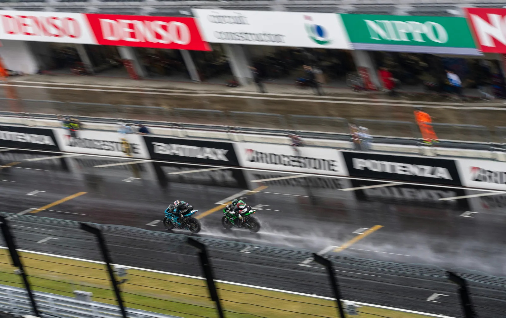
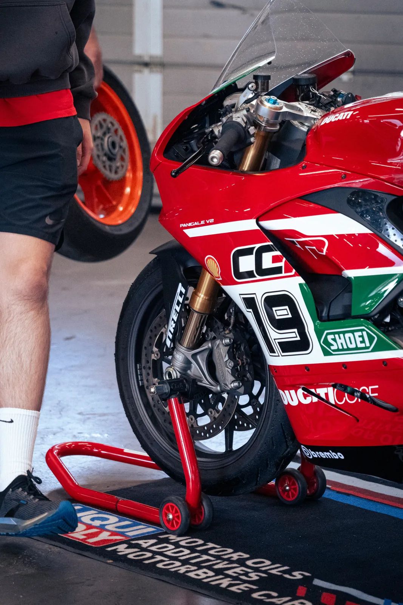
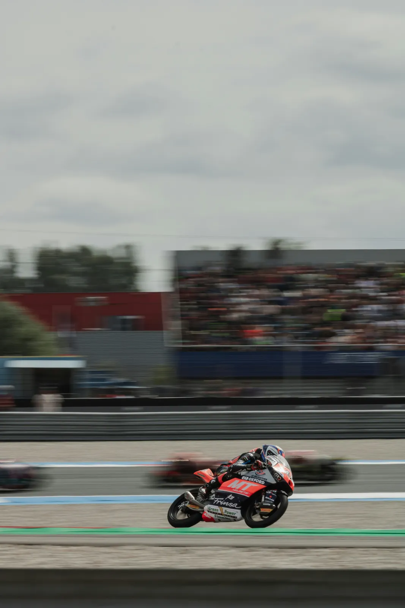
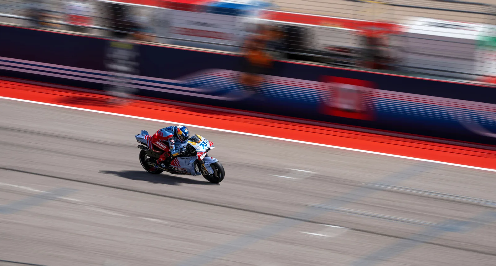

Circuit onderhoud motor en trackday onderhoud slim bijhouden
Na trackdays en circuitgebruik wil je precies weten wat je moet controleren, vervangen en plannen.
- Sneller zicht op slijtage van banden en remmen
- Meer controle over onderhoud tussen trackdays
- Betere grip op kosten en vervangmomenten
Kort antwoord
Trackday onderhoud draait om sneller controleren, registreren en vervangen
Bij circuitgebruik slijten banden, remmen, olie en aandrijving sneller dan bij normaal straatgebruik.
Wie onderhoud na een trackday direct vastlegt, houdt beter zicht op slijtage, kosten, vervangmomenten en veiligheid tussen circuitdagen door.

Trackday onderhoud
Waarom motor onderhoud bij circuitgebruik anders is dan op straat
Rijd je regelmatig trackdays, dan krijgt je motor tijdens circuitgebruik veel meer belasting dan op de openbare weg.
Hogere toerentallen, stevig remmen en langere belasting zorgen voor extra slijtage. Daardoor gaan banden, remblokken, olie en aandrijving vaak sneller achteruit dan je zou verwachten op basis van alleen kilometers. Juist daarom wordt trackday onderhoud vaak onderschat.
Wie zijn motor onderhoud bijhoudt merkt dat een standaard lijstje vaak niet genoeg is. Juist voor circuitgebruik wil je onderhoud koppelen aan sessies, trackdays, onderhoud na een trackday en terugkerende slijtagepatronen. Een motor onderhoud app helpt om dat centraal vast te leggen.


Waar circuitgebruik extra impact op heeft
Remblokken en schijven krijgen zwaardere belasting
Motorolie degradeert sneller door hitte
Ketting en tandwielen slijten harder
Vloeistoffen en rubbers krijgen meer te verduren
Kosten lopen sneller op zonder goed overzicht
Wat je wilt bijhouden als je circuit rijdt
Als je serieus trackdays rijdt, wil je niet gokken wanneer iets vervangen of gecontroleerd moet worden.
Leg daarom niet alleen kilometerstanden vast, maar ook het aantal trackdays, slijtage per set banden, onderhoud aan remmen, oliebeurten, kettingspanning en eventuele afstellingen. Dat sluit goed aan op een praktisch motor onderhoud schema, maar dan afgestemd op intensief gebruik en onderhoud na elke trackday. Zeker bij eigen sleutelwerk helpt het om dat soort momenten ook netjes te onderhoud registreren.

Belangrijke punten om na elke trackday te registreren
Aantal gereden sessies of trackdays
Banden, compound en slijtagebeeld
Remblokken, remschijven en remvloeistof
Olie en oliefilter verversingen
Kettingonderhoud en spanning
Upgrades, setup-wijzigingen en kosten
Onderhoud na een trackday: wat controleer je direct?
De grootste winst zit vaak niet in een grote beurt, maar in consequent controleren na elke circuitdag.
Controleer daarom direct na een trackday de staat van je banden, remmen, olie, ketting, vloeistoffen en eventuele lekkages of speling. Door dat vaste ritme op te bouwen, wordt onderhoud na trackday gebruik voorspelbaar in plaats van reactief.
Snelle checklist na circuitgebruik
Bandenwarmte en slijtage controleren
Remblokken en remgevoel nalopen
Oliepeil en lekkages checken
Ketting en spanning beoordelen
Vloeistoffen en rubbers controleren
Kosten en setup-notities registreren
Het risico van onderhoud op gevoel doen
Veel rijders vertrouwen op ervaring, maar op het circuit kan een gemist onderhoudsmoment direct merkbaar zijn.
Een band kan al over zijn piek heen zijn, remprestaties kunnen afnemen en olie kan sneller verouderen dan je verwacht. Zonder historie is het lastig terug te zien wat wanneer is gedaan. Sommige rijders beginnen dat in Excel, maar zodra slijtage, kosten, trackdays en documenten samenkomen wordt dat snel beperkt.


Veelgemaakte fout
De fout is alleen kilometers gebruiken als maatstaf voor slijtage
Bij trackdays zegt circuitbelasting vaak meer dan de tellerstand.
Als je alleen op kilometers stuurt, mis je hoe hard banden, remmen en olie tijdens intensief gebruik achteruit kunnen gaan. Trackdays en sessies apart registreren geeft daarom een realistischer beeld.
Grip op circuit onderhoud met een digitaal logboek
Met GarageBook houd je per motor een complete onderhoudshistorie bij, juist ook voor intensief gebruik.
Zo zie je sneller patronen in slijtage, plan je onderhoud slimmer tussen trackdays en voorkom je dat belangrijke checks tussen wal en schip vallen. Dat geeft rust, overzicht en meer controle over veiligheid, budget en onderhoud na circuitgebruik.
Gerelateerde pagina’s
Verder lezen over onderhoud en overzicht
Werk ook aan je basis met een digitaal onderhoudsboekje, motor onderhoud bijhouden, een praktisch motor onderhoud schema, de vergelijking met motor onderhoud in Excel en de voordelen van een motor onderhoud app en lees de blog motor APK in Europa en zelf onderhoud bijhouden.
Veelgestelde vragen over circuit onderhoud van een motor
Waarom vraagt circuitgebruik meer onderhoud?
Omdat je motor op het circuit meer hitte, hogere toerentallen en zwaardere remacties verwerkt dan op de openbare weg.
Wat moet je na een trackday aan je motor controleren?
Controleer in elk geval banden, remmen, olie, ketting, vloeistoffen, afstellingen en noteer direct welke slijtage, werkzaamheden en kosten daarbij horen.
Is kilometerstand genoeg voor circuit onderhoud?
Nee, want bij circuitgebruik zegt het aantal sessies of trackdays vaak meer over slijtage dan alleen kilometers.
Is GarageBook gratis?
Ja, je kunt direct gratis starten via app.garagebook.nl/start.